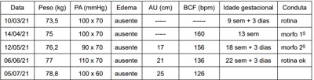
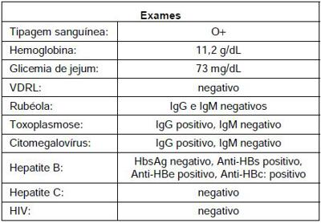

Questão 1 · Diagnóstico · Teste oral de tolerância à glicose 75g TOTG 75g · 4000185775A realização do teste oral de tolerância à glicose com 75 g de glicose é considerada um teste de triagem de diabetes gestacional em mulheres no pré-natal. Assinale a alternativa que apresenta o tempo ideal preconizado para a realização desse teste.
A Entre 24 e 28 semanas de gestação.
B Entre 18 e 22 semanas de gestação.
C Logo no início da gestação.
D Seis meses após o parto.
Questão 2 · Ultrassonograf ia no primeiro trimestre · Obstetrícia · Diagnóstico e datação da gestação · 4000185677Sobre o diagnóstico de gravidez e gestação inicial, analise as assertivas abaixo considerando V para verdadeiro e F para falso e assinale a alternativa que apresenta a sequência correta. ( ) A detecção da hCG no sangue ou na urina maternos é a base dos testes endócrinos para o diagnóstico de gravidez. ( ) A medida ultrassonográ ca do comprimento cabeça-nádega (CCN) constitui o índice biométrico mais preciso para estimar a idade gestacional. ( ) Através do sonar, os batimentos cardíacos do concepto são audíveis a partir da 7ª semana de gestação na consulta de rotina de prénatal.
A VVF
B FVF
C FFF
D VVV
E VFV
Revisar: possível letra faltando em enunciado
Questão 3 · Avaliação do risco gestacional · Obstetrícia · 4000185508A estrati cação de risco obstétrico durante a assistência pré-natal é um dos fatores determinantes para a redução da mortalidade materno-fetal. De acordo com o Manual de Gestação de Alto Risco do Ministério da Saúde, qual das opções abaixo NÃO É característica individual e/ou condição sociodemográ ca que deve ser considerada como critério de encaminhamento de gestante/puérpera à unidade de maior nível hierárquico de pré-natal:
A Dependência ou uso abusivo de tabaco, álcool ou outras drogas
B Idade inferior a 15 anos e maior de 40 anos
C Sobrepeso
D Transtornos alimentares (bulimia, anorexia)
Revisar: possível letra faltando em enunciado
Questão 4 · Assistência prénatal · 4000184616Paciente 38 anos, solteira, do lar, gravidez não planejada, comparece ao pré-natal informando gestação de 24 semanas. Está assintomática e apresenta exames realizados há 1 semana: GS AB negativo, teste de Coombs indireto negativo, glicemia de jejum 85mg/dL, hemoglobina 11,6g/dL, sorologia para toxoplasmose IgG positivo e IgM negativo, teste HIV 1 e 2 negativo, HbsAg não reator, anti Hbs positivo, VDRL não reator, urocultura positiva, acima de 100.000 unidades formadoras de E.Coli. A respeito dessa consulta, é CORRETO afirmar que:
A O resultado em relação à hepatite B é compatível com susceptibilidade e justifica vacinação durante a gestação.
B A prescrição de sulfametoxazol + trimetoprima deve ser realizada para as infecções urinárias não complicadas na gravidez, evitando risco de prematuridade.
C O teste de Coombs indireto indica que a paciente precisa receber imunoglobulina anti-D o mais rápido possível.
D A dose de sulfato ferroso para essa paciente deve ser de 30 a 60mg de ferro elementar por dia.
Questão 5 · Obstetrícia · Diagnóstico e datação da gestação · 4000183441No dia 14 de dezembro de 2022, paciente, primigesta, chegou à emergência obstétrica com queixa de sangramento discreto. Referia dia da última menstruação (DUM) em 15 de setembro de 2022 e que foi submetida a uma ultrassonogra a em 07 de novembro de 2022, a qual constatou idade gestacional pelo comprimento céfalo-nádegas de 8 semanas. Assinale a alternativa CORRETA que representa a idade gestacional mais adequada para acompanhamento da gravidez no dia da consulta da emergência.
A 12s6d
B 12s3d
C 13s2d
D 13s6d
E 13s0d
Questão 6 · Obstetrícia · Imunizaçao na gestação · 4000182971Durante a assistência pré-natal de baixo risco de gestante com 20 semanas, o resultado do AgHBs (antígeno de superfície do vírus da hepatite B) foi não reagente e em sua carteira de vacinação não há registro de vacina contra hepatite B. A conduta em relação a essa imunização é
A iniciar esquema de vacinação.
B orientar vacinação no terceiro trimestre.
C orientar vacinação no puerpério.
D contra-indicar vacinação na gestação.
Questão 7 · Assistência prénatal · Obstetrícia · 4000182801Que fármaco, dentre os abaixo, pode ser utilizado durante a gestação em pacientes com epilepsia?
A Lamotrigina
B Hidantoína
C Fenobarbital
D Ácido valproico
Questão 8 · Assistência prénatal · Obstetrícia · 4000182800Assinale a assertiva correta sobre assistência pré-natal.
A No exame físico da gestante, a ausculta dos batimentos cardiofetais pode ser feita a partir da 6a semana de gestação com sonar Doppler.
B No 3º trimestre de gestação, o decúbito dorsal materno pode levar ao efeito Poseiro, que se caracteriza por bradicardia materna e taquicardia fetal.
C Toda gestante deve receber pelo menos 1 dose da vacina dTpa, mesmo que tenha recebido dTpa na gestação anterior e dT na gestação atual.
D A presença de anticorpos IgG para toxoplasmose com baixa avidez no 1o trimestre de gestação indica infecção antiga e exclui infecção aguda nos últimos 3 meses.
Questão 9 · Obstetrícia · Diagnóstico e datação da gestação · 4000182799A regra de Nägele pode ser utilizada para o cálculo da data provável do parto. Considerando que uma gestante informou ter sido 01 de junho de 2022 a data da última menstruação, a data provável do parto será
A 26 de fevereiro de 2023.
B 01 de março de 2023.
C 04 de março de 2023.
D 08 de março de 2023.
Questão 10 · Obstetrícia · Diagnóstico e datação da gestação · 4000182734O diagnóstico correto de gestação baseia-se na avaliação clínica de sinais e sintomas que fornecem dados iniciais a respeito do grau de probabilidade de tratar-se realmente de uma gravidez; esses sinais e sintomas podem ser classificados como sintomas e sinais de presunção, sinais de probabilidade e sinais de certeza. Estão entre os sinais de probabilidade de gestação,
A Atraso menstrual de 10-14 dias ou amenorreia secundária.
B Alterações em formato e em consistência do útero.
C Consistência cervical amolecida.
D Aumento do volume abdominal.
Questão 11 · Assistência prénatal · Obstetrícia · 4000182733De acordo com a OMS e com o manual técnico para o acompanhamento do pré-natal do Ministério da Saúde, analisar os itens abaixo: I. A primeira consulta de pré-natal deve ocorrer o mais cedo possível, preferivelmente antes da 16ª semana de gestação. II. Recomenda-se um mínimo de 6 consultas pré-natais: uma no 1º trimestre, duas no 2º e três no 3º. III. O acompanhamento pode ser feito com consulta médica e/ou de enfermagem. Estão CORRETOS:
A Somente os itens I e II.
B Somente os itens II e III.
C Somente os itens I e III.
D Todos os itens.
Questão 12 · Assistência prénatal · Obstetrícia · 4000182730É contraindicação absoluta à prática de exercícios físicos na gestante com:
A Anemia com Hb <10g/dL.
B DM 1 descompensado (glicemia capilar >200mg/dL ou <65mg/dL).
C Gestação gemelar >28 semanas.
D Parto pré-termo prévio.
Questão 14 · Exames laboratoriais · Obstetrícia · 4000181741Gestante 7 semanas vai à primeira consulta de pré-natal. É hígida e refere ser doadora de sangue frequente. A última doação foi há 2 meses, sem intercorrências. Os exames de sorologia que devem ser solicitados são:
A Hepatite B, hepatite C e HIV.
B Não precisa solicitar sorologias pois é doadora frequente.
C Hepatite A, hepatite B e herpes.
D Hepatite A, hepatite C e Covid-19.
Questão 15 · Relação entre a idade gestacional e achados ultrassonográf icos · 4000181419Cálculo da idade gestacional pela ultrassonograf ia IG USG M.S.S.S., 37 anos, G4P3A0, 3 partos vaginais prévios à termo, idade gestacional de 37 semanas (calculada por ultrassom de 10 semanas), altura de fundo uterino de 31 cm, feto em apresentação cefálica. USG Obstétrica revela peso fetal no percentil 3 para a idade gestacional, e maior bolsão de líquido amniótico 21mm. Doppler das artérias uterinas, cerebral média e umbilical normal. Indique o diagnóstico e conduta
A Trata-se de um feto pequeno para a idade gestacional. Permite-se aguardar a resolução da gestação com até 40 semanas e não está contraindicado o parto vaginal.
B Trata-se de um feto com restrição de crescimento intrauterino estágio 1. Permite-se aguardar a resolução da gestação com até 38 semanas, realizando Doppler semanalmente e não está contraindicado o parto vaginal.
C Trata-se de um feto com restrição de crescimento intrauterino estágio 2. Deve-se indicar a resolução da gestação de forma imediata e não está contraindicado o parto vaginal.
D Trata-se de um feto com restrição de crescimento intrauterino estágio 3. Deve-se indicar a resolução da gestação de forma imediata por meio de uma cesárea.
Questão 16 · Antibioticoprof ilaxia para EGB na RPM · 4000191026Pesquisa Streptococcus do grupo B Strepto B EGB swab para pequisa Strepto B Em relação ao estreptococos do grupo B (EGB), é correto afirmar que
A quando o resultado vem positivo, o pre-natalista deve prescrever penicilina cristalina ou ampicilina.
B parturientes que não fizeram pesquisa de EGB devem fazer profilaxia da infecção neonatal.
C a pesquisa do EGB deve ser solicitada no terceiro trimestre junto com a repetição das sorologias suscetíveis.
D os casos de EGB negativos no pré-natal com 35 semanas, se apresentarem rotura de membranas com mais de 18 horas, devem fazer profilaxia.
E além das parturientes que têm pesquisa de EGB positivo, as que apresentam trabalho de parto prematuro, ou que apresentam febre no trabalho de parto e não fizeram pesquisa, devem fazer profilaxia.
Questão 17 · Assistência prénatal · Obstetrícia · 4000173554Sobre assistência pré-natal, assinale a alternativa CORRETA.
A Não há contraindicação para a realização das vacinas contra febre amarela, raiva humana, poliomielite, meningococo, pneumococo, SARS-CoV-2, gripe A e hepatite B durante a gravidez.
B Segundo o protocolo do Ministério da Saúde, a testagem para sífilis está preconizada na gestação na 1ª consulta de pré-natal, idealmente no 1º trimestre e no início do 3º trimestre, não sendo necessária no momento do parto, caso já tenha sido realizada anteriormente.
C Devido ao aumento no número de casos de sífilis congênita no país, nos últimos dez anos, o tratamento de escolha para a sífilis primária, conforme recomendação do Ministério da Saúde, deve ser realizado com penicilina G Benzatina 7.200.000 UI intramuscular em três semanas consecutivas (2,4 milhões UI/semana).
D No caso de pacientes de riscos para pré-eclâmpsia identificadas, deve ser iniciado ácido acetil salicílico (AAS) 100 mg/dia e cálcio 500 mg/dia o mais precoce possível.
E O teste de tolerância oral à glicose (TTOG) com 75g é realizado entre 24 e 28 semanas de gravidez, com valores de referência > 92mg/dL no jejum, > 180 mg/dL com 1 hora e > 152 mg/dL com 2 horas.
Questão 18 · Assistência prénatal · Obstetrícia · 4000169972No acompanhamento da assistência pré-natal, vários elementos são importantes. Assinale a alternativa correta.
A O útero deve ter seu crescimento mês a mês, e sua medida em centímetros deve corresponder à idade gestacional em semanas, de forma que com 6 semanas deve medir 6 cm acima da sínfise púbica, 10 semanas – 10 cm; 18 semanas – 18 cm; 25 semanas – 25 cm; 35 semanas – 35 cm; 40 semanas – 40 cm.
B O foco corresponde ao local de maior audibilidade dos batimentos cardíacos fetais, assim, num feto em OEA, o foco deverá estar do lado direito, onde está o dorso.
C A ausculta dos batimentos cardíacos fetais no consultório com sonar doppler é possível a partir de 6,2 semanas.
D A percepção dos movimentos fetais é um sinal de vitalidade fetal e é perceptível pelas gestantes a partir de 10 semanas.
E A frequência cardíaca fetal que auscultamos no pré-natal tem uma variação de 110 a 160 batimentos por minuto, podendo, em caso de muita movimentação fetal, ultrapassar esse limite.
Questão 19 · Assistência prénatal · Obstetrícia · 4000169971Uma mulher de 23 anos refere que o primeiro dia de sua última menstruação normal foi dia 25/11/2021. Seus ciclos menstruais eram normais com duração de 3 dias e intervalo de 28 dias. Não fazia uso de métodos contraceptivos. Fez exame de sangue que confirmou gestação. Hoje, sendo dia 10/01/2022, é correto afirmar que
A a DPP é dia 02/08/2022.
B está com atraso menstrual de 17 dias, e não é possível ainda visibilizar o embrião pela ultrassonografia transvaginal.
C a idade gestacional é de 6 4/7 semanas, e já se pode visualizar e ouvir os batimentos cardíacos fetais pela ultrassonografia com doppler transvaginal.
D o teste de gravidez só poderia ser positivo após 25/12/2021, quando teria 1 mês da última menstruação, portanto, deve ter engravidado antes.
E o teste de gravidez só poderia ser positivo após 10/01/2022, quando teria 15 dias do atraso.
Questão 20 · Assistência prénatal · Obstetrícia · 4000169551L.M.S., 12 anos, reside com os pais, cursa o sétimo ano no colégio, nega patologias, e vem ao consultório acompanhada de uma amiga de 18 anos. Refere que teve um namorado de 20 anos, por alguns meses, o qual conheceu por aplicativo, com quem iniciou vida sexual ativa. Mas acabou o relacionamento. Traz BHCG positivo e ultrassonogra a demonstrando gestação de 19 semanas. Está bem abalada, pois refere que a gestação é indesejada. Solicita orientação. Entre as recomendações a respeito desse caso, qual a conduta imediata?
A Solicitar presença da mãe ou responsável legal, no processo de avaliação.
B Encaminhar ao pré-natal e solicitar exames laboratoriais de rastreio.
C Orientar sobre à insegurança do procedimento de interrupção nesse estágio.
D Abordagem antecipatória para decisão compartilhada com o parceiro.
Questão 21 · Assistência prénatal · Obstetrícia · 4000168912Faz parte da propedêutica da rotina pré-natal de risco habitual, exceto:
A Teste rápido para sífilis ou VDRL.
B Eletroforese de proteínas.
C Teste de tolerância a glicose.
D Eletroforese de hemoglobinas.
Questão 22 · Assistência prénatal · Obstetrícia · 4000168750Sobre o pré-natal na Atenção Básica, analise as afirmativas abaixo. I. Diante de um teste rápido positivo para sí lis, na gestação é necessário solicitar o VDRL para confirmação diagnóstica antes de iniciar o tratamento com penicilina. II. A suplementação periconcepcional de ácido fólico em mulheres que planejam engravidar deve ser iniciada, pelo menos, 30 dias antes da provável concepção, de forma a prevenir malformações do tubo neural. III. A indução do parto nas pacientes com gestações de 41 semanas e preferível a avaliação seriada do bem-estar fetal, sendo associada a menor taxa de morbimortalidade perinatal. Assinale a alternativa em que todas as afirmativa(s) são VERDADEIRAS:
A I e II
B I e III
C II e III
D I; II e II
Questão 23 · Assistência prénatal · Obstetrícia · Prénatal · 4000167388Mulher, 22a, G2P1FV0, vem para primeira consulta de pré-natal em Unidade Básica de Saúde, assintomática. Idade gestacional pela amenorreia: 6 semanas. Antecedente Pessoal: óbito fetal com 32 semanas sem causa conhecida, nega patologias crônicas e nega uso de substâncias psicoativas. Questiona sobre riscos desta gestação e se deverá fazer algo diferente. EM RELAÇÃO ÀS DÚVIDAS DA PACIENTE, ASSINALE A RESPOSTA CORRETA:
A Risco habitual; seguir pré-natal de rotina em UBS.
B Alto risco; usar anticoagulaçâo profilática.
C Alto risco; investigar trombofilias.
D Risco habitual; ultrassonografia quinzenal no terceiro trimestre.
Questão 24 · Assistência prénatal · Obstetrícia · 4000167386Mulher, 19a, G1P0, idade gestacional de 39 semanas e 6 dias, comparece ao pronto atendimento com queixa de perda de líquido via vaginal há 12 horas e contrações a cada 5 minutos (há 6 horas). Refere boa movimentação fetal. Não realizou pré- natal. Exame físico; FC= 88 bpm, PA = 109 x 75 mmHg, T= 36,2°C. Exame obstétrico: altura uterina =35 cm, BCF=150 bpm, dinâmica uterina= 3 contrações moderadas de 40 segundos em 10 minutos. Exame especular: saída de moderada quantidade de líquido claro com grumos grossos pelo orifício externo do colo. Toque vaginal: colo dilatado 5 cm, medianizado, 80% esvaecido, feto cefálico, plano - 2 de DeLee. EM RELAÇÃO AO ESTREPTOCOCO DO GRUPO B, A CONDUTA É:
A Coletar cultura e, se positiva, iniciar profilaxia.
B Iniciar imediatamente profilaxia.
C Iniciar profilaxia em 6 horas.
D Não tem indicação de profilaxia.
Questão 25 · Palpação obstétrica manobras de LeopoldZweif el · 4000167161O exame físico obstétrico consiste em inspeção, palpação, ausculta e, se necessário, toque. Quanto à palpação, devemos frisar a avaliação do útero e do seu conteúdo, visando ao reconhecimento do feto nele contido, sua apresentação e posição. Para sistematizar a técnica de palpação, são consideradas diversas fases (manobras de Leopold-Zweifel). Sobre essas fases, assinale a alternativa correta.
A No primeiro tempo, delimita-se o fundo uterino, diagnosticando a situação fetal. Na maioria dos casos, sentimos no fundo uterino o polo pélvico, sendo mais volumoso, irregular, resistente, mas redutível. Se encontrado o polo cefálico, este será de superfície mais regular, resistente e irredutível. O feto pode estar em situação posterior, anterior, à esquerda e à direita.
B No segundo tempo, objetiva-se determinar a posição fetal, podendo ser longitudinal (vertical), transversal ou córmica, ou oblíqua, em relação ao eixo materno. As mãos são deslizadas para a lateral, em direção ao polo inferior do órgão, tentando sentir o dorso fetal e as pequenas partes ou membros, de um lado ou outro lado do útero.
C O terceiro tempo é conhecido, mais particularmente, por manobra de Leopold ou Pawlick. Tem como objetivo avaliar a mobilidade do polo fetal inferior em relação ao estreito superior da pelve materna, determinando, assim, a apresentação fetal. Quando o polo fetal estiver mais insinuado, mais móvel estará, havendo demonstração da dilatação cervical. A apresentação pode ser pélvica, cefálica e córmica.
D No quarto tempo, objetiva-se a determinação da insinuação fetal. É a única manobra feita com as costas do examinador voltada para os pés das pacientes, colocando-se as mãos sobre as fossas ilíacas, em direção ao hipogástrio, com movimento de escavação.
E Durante a palpação, foi vista posição fetal à esquerda. Assim, fica perceptível que o dorso está à esquerda e os membros fetais orientados à direita em relação ao eixo materno.
Questão 26 · Assistência prénatal · Obstetrícia · 4000166883Segundo orientações do Ministério da Saúde, para o pré-natal nas unidades básicas, uma gestante de 13 semanas que se apresenta para início do pré-natal com peso de 60 kg e 1,60 m de altura, deverá ganhar, semanalmente, no 2º e 3º, trimestres cerca de
A 200 gramas.
B 300 gramas.
C 400 gramas.
D 500 gramas.
Questão 27 · Assistência prénatal · Obstetrícia · 4000166258Gestante, 39 anos de idade, 2G 1P normal anterior (nativivo de termo, 3950 gr), veio para consulta pré-natal de rotina. Os dados de seguimento estão a seguir. DUM: 03/01/2021 Peso inicial: 70 kg Est: 1,61 m IMC inicial: 27 kg/m² Exames: 08/03/2021 Hb = 10,1, Ht = 31, Leucograma = 10200, Plaquetas: 221100, Glicemia de jejum: 94 mg/dL, Sorologias: VDRL não reagente/ Teste rápido não reagente, HIV: não reagente, HBsAg: não reagente, Hepatite C: não reagente, Toxoplasmose: IgG reagente; IgM não reagente, Rubéola: IgG reagente; IgM não reagente. A alternativa que descreve os exames que devem ser solicitados na consulta de 20 de julho é:

A teste oral de tolerância à glicose, sorologias para HIV e sífilis.
B hemograma, sorologias para HIV e sífilis.
C teste oral de tolerância à glicose, hemograma, sorologias para HIV, sífilis e toxoplasmose.
D hemograma, sorologias para HIV e sífilis, pesquisa de estreptococo.
Questão 28 · Causas de alcalose respiratória · Tireotoxicose gestacional transitória · 4000165634Formas de reposição de potássio Mulher de 31 anos de idade, secundigesta, nulípara, chega ao pronto atendimento referindo náuseas e vômitos intensos (3 a 4 episódios por dia). Refere data da última menstruação em 23/09/2021. Portadora de distúrbio de ansiedade em uso de Sertralina 100 mg por dia, chegou bastante agitada. Ao exame clínico, paciente em regular estado geral, desidratada 2+/ 4+, PA 90x62 mmHg, FC 124 bpm, rítmico, Saturação 98%. Exame ginecológico mostrou conteúdo vaginal siológico, colo impérvio e útero compatível com a idade gestacional. Foram colhidos os seguintes exames: Hb 11,4 g/dl; Ht 34,2%, Leucócitos 10,66mil/mm³; Plaquetas 268 mil/mm³; TSH 0,02 UI/ml, T4 total 8,2 mcg/dl; TGO 19U/L; TGP 28U/L; Cr 0,51 mg/dl; U 15 mg/dl; Na 136 mEq/L; K 3,0 mEq/L; PCR 0,06 mg/L; gasometria venosa (pH 7,47; pO₂ 80,1 mmHg; pCO₂ 29,2 mmHg; HCO₃ 29,1 mmol/L; BE +10). Eletrocardiograma: Além da prescrição de antiemético e hidratação, qual é a prescrição mais adequada no pronto atendimento?

A Reposição de bicarbonato endovenosa.
B Ofertar oxigênio em máscara aberta.
C Reposição de potássio endovenosa.
D Administrar diurético endovenoso.
Questão 29 · Assistência prénatal · Obstetrícia · Imunizaçao na gestação · 4000165245Paciente 32 anos, primigesta, realizou sorologia para rubéola no primeiro trimestre, com resultados: IgG negativo e IgM negativo. Indique a conduta adequada nesse caso.
A Vacinação imediatamente, pois o risco de transmissão fetal é inexistente.
B Seguimento com sorologia mensal até o parto.
C Vacinação após a 20ª semana de gestação.
D Vacinação no puerpério.
E Vacinação após a interrupção do aleitamento materno, pelo risco de transmissão de rubéola ao lactente.
Questão 30 · Hiperêmese gravídica · 4000165121Com relação a hiperêmese gravídica, sabe-se até o momento que sua etiologia é ainda incerta. A hipótese de que fatores endócrinos poderiam causá-la, frequentemente é citada. Baseado nesta teoria assinale a alternativa que contempla os fatores relacionados com esta situação. I - Elevação dos níveis de gonadotrofina coriônica humana. II - Alterações dos níveis de progesterona. III - Produção insuficiente do hormônio adrenocorticotrófico (ACTH).
A As afirmativas I e II são verdadeiras. A afirmativa III é falsa.
B As afirmativas I e III são verdadeiras. A afirmativa II é falsa.
C As afirmativas II e III são verdadeiras. A afirmativa I é falsa.
D As afirmativas I, II e III são verdadeiras.
E As afirmativas I, II e III são falsas.
Questão 31 · Imunizaçao na gestação · 4000164967Mulheres vacinadas com vírus vivos ou vivos atenuados devem ser aconselhadas a evitar a gravidez por pelo menos:
A seis meses
B três meses
C um mês
D doze meses
Questão 32 · Hiperêmese gravídica · 4000164965Na hiperêmese gravídica torna-se mandatória a hospitalização e o antiemético melhor indicado é:
A ondansetrona
B metoclopramida
C prometazina
D doxilamina
Questão 33 · Obstetrícia · Imunizaçao na gestação · 4000164513Qual das vacinas abaixo deve ser evitada durante a gestação, segundo os protocolos do Ministério da Saúde?
A Difteria.
B Sarampo.
C Coqueluche.
D Tétano.
Questão 34 · Obstetrícia · Diagnóstico e datação da gestação · 4000164087Gestante é atendida na UBS em 10/11/2021 para iniciar acompanhamento pré-natal. Relata não saber a data da última menstruação, mas apresenta ultrassonogra a de 06/09/2021, que mostra embrião único, tópico com CCN = 13mm, BCF = 162bpm, idade gestacional de 7 semanas e 4 dias. A idade gestacional no momento do atendimento prestado na UBS é de:
A 17 semanas e 1 dia
B 17 semanas e 5 dias
C 16 semanas e 4 dias
D 16 semanas e 6 dias
Questão 35 · Exames laboratoriais · Assistência prénatal · Obstetrícia · 4000164083A infecção por Streptococcus do grupo B (EGB) é hoje a principal causa de sepse neonatal precoce. Em pacientes com cultura desconhecida, a profilaxia antimicrobiana é indicada em caso de:
A gestação anterior com rastreio positivo para EGB
B bacteriúria assintomática positiva para EGB
C idade gestacional menor que 40 semanas
D amniorrexe há mais de 12 horas
Questão 36 · Avaliação do risco gestacional · 4000163704Considere o caso clínico abaixo e os personagens nele ilustrados, para responder. Após ser aprovado e ingressar no Programa de Residência Médica em Medicina de Família e Comunidade, você é direcionado para uma Unidade de Atenção Primária à Saúde (UAPS) para ser recebido pelo médico preceptor da Unidade. Em sua primeira participação de reunião de equipe, uma das agentes comunitárias de saúde (ACS) da equipe do médico preceptor traz o relato de uma gestante de sua microárea que não procurou a Unidade de Saúde para começar o pré-natal. A gestante era Vanessa e ela era antiga conhecida da equipe, porque seu nado pai, Seu Odair, fora uma liderança comunitária e era muito querido por todos. Vanessa tinha a primeira consulta de pré-natal agendada para o primeiro horário depois da reunião de equipe. Dr. Marcos Júlio, seu preceptor, relata que Vanessa nunca teve boa relação com os pais e saiu de casa cedo, passando a morar, aos 14 anos, na casa de Ubiratan, seu primeiro parceiro. Após alguns anos morando juntos, Vanessa engravidou e chegou a ser acompanhada pela UAPS no pré-natal, mas teve perda gravídica com aproximadamente 12 semanas de seguimento. Durante esse acompanhamento pré-natal, a equipe cou ciente de que Vanessa vivia em contexto de violência doméstica, mas continuava vivendo com Ubiratan, porque não aceitava voltar para a casa dos pais. Por volta de seus 24 anos, Vanessa teve episódio de hemiplegia desproporcional em dimídio esquerdo, desvio de rima labial e disartria, enquanto trabalhava em uma casa como diarista. Foi levada à urgência e hospitalizada. Durante hospitalização, confirmou-se um infarto cerebral. A família de Vanessa possui histórico de AVCs em idades precoces: Vanusa apresentou episódio de AVC durante uma de suas gestações e dona Benzarina teria apresentado o primeiro AVC antes da menopausa. Segundo a Assistente Social do hospital em que Vanessa cou internada por quase dois meses, Ubiratan nunca teria realizado uma visita, mas Edberto, um ex-namorado, foi companhia assídua. Após a alta hospitalar, Vanessa descobriu que Ubiratan estava vivendo com outra mulher e se mudou para casa de Edberto, que a acolheu, a despeito da não-aceitação do pai de Edberto, Seu Eduardo. Depois de seis anos morando juntos, Vanessa engravidou novamente, mas não procurou a UAPS. A ACS fazia visitas domiciliares na mesma rua em que Edberto e Vanessa moram, quando viu Vanessa, já com barriga gravídica, varrendo a calçada. Após breve conversa, a ACS agenda atendimento para Vanessa na UAPS. A revisão do prontuário de atendimentos prévios da Vanessa mostra que exames de pesquisa de anticoagulante lúpico e anticorpo anticardiolipina foram solicitados duas vezes, em intervalo maior que 12 semanas, com resultados persistentemente elevados. A partir das informações coletadas, assinale a alternativa com risco gestacional de Vanessa.
A Alto risco.
B Risco habitual.
C Risco habitual com vulnerabilidades.
D Não há informações suficientes para classificar o risco gestacional.
Revisar: possível letra faltando em enunciado
Questão 37 · Períodos da gestação · Obstetrícia · Prénatal · 4000163559Puérpera, 30 anos, teve parto cesáreo de trigêmeos há 3 dias. Em sua história obstétrica, consta um episódio de aborto e um parto normal. Qual seria a representação gráfica da paridade desta paciente?
A G5 P1 C3 A1
B G5 P1 C1 A1
C G3 P1 C1 A1
D G3 P1 C3 A1
E G5 P4 A1
Questão 38 · Diagnóstico clínico · Obstetrícia · Prénatal · 4000163558Gestante chega ao pronto atendimento com queixa de dor pélvica, não sabe informar a data de sua última menstruação (DUM) e informa presença de movimentos fetais; ao exame físico, apresenta colostro e o fundo uterino localiza-se entre a cicatriz umbilical e a borda superior da sínfise púbica; logo, essa paciente tem uma idade gestacional de, no mínimo:
A 12 semanas.
B 16 semanas.
C 20 semanas.
D 24 semanas.
E 28 semanas.
Questão 39 · Cálculo da data provável do parto DPP regra de Negele · 4000147051G4 PN3 vem para consulta de pré-natal na Unidade Básica de Saúde e relata data da última menstruação (DUM) em 15/11/2020. Apresenta ciclos menstruais regulares. Segundo a regra de Naegele, a data provável do parto (DPP) será em
A 22/12/2021.
B 12/12/2021.
C 12/08/2021.
D 22/08/2021.
E 22/07/2021.
Questão 40 · Sinais de probabilidade de gestação · 4000147050NÃO configura sinal de probabilidade de gravidez
A sinal de Nobile-Budin.
B sinal de Hegar.
C ausculta do batimento cardíaco fetal.
D aumento do volume uterino.
E atraso menstrual.
Questão 41 · Identif icação · 4000147043Qual das seguintes alternativas NÃO con figura uma condição para encaminhamento ou acompanhamento de pré-natal de alto risco?
A Intervalo interpartal menor que 2 anos.
B Nefropatia.
C Hematoma de saco gestacional.
D Ganho de peso excessivo.
E Idade menor que 15 anos.
Questão 42 · Assistência prénatal · Hiperêmese gravídica · Obstetrícia · 4000146765Maria, com 8 semanas de idade gestacional, queixa-se de náuseas da gravidez. Refere náuseas e cerca de dois episódios de vômitos todos os dias. Nega outras queixas. Não houve perda de peso no intervalo entre as consultas. Sobre a condução da queixa de Maria, marque a opção CORRETA:
A indicar hospitalização para hidratação venosa e antieméticos intravenosos;
B iniciar piridoxina e doxilamina via oral;
C Prescrever metilprednisolona via oral;
D indicar fracionamento da dieta e evitar medicações até o final do primeiro trimestre;
E solicitar laboratório com eletrólitos, enzimas hepáticas, bilirrubina sérica, amilase e lipase.
Questão 43 · Datação da gestação · 4000146684Considerando a datação e o período gestacional, é CORRETO afirmar:
A Pela regra de Doppler, a data provável do parto é calculada pela subtração de três meses e meio do primeiro dia da data da última menstruação.
B A gestação humana dura aproximadamente 275 dias, a partir do primeiro dia da data da última menstruação até a dilatação.
C O período de 39 semanas de gestação é baseado nas semanas de concepção e não nas semanas menstruais.
D Os “chutes” do feto ocorrem por volta de 19 semanas na primeira gravidez.
Questão 44 · Avaliação do risco gestacional · Assistência prénatal · Obstetrícia · 4000146683A avaliação médica é de extrema importância para a análise de problemas e riscos que possam acometer tanto a genitora quanto sua prole diante de uma possível gravidez. Dessa forma, a avaliação de propensos riscos deve abranger:
A O rastreamento de gestantes para o vírus da sífilis, sendo que as mulheres com riscos sociais a doenças devem ser vacinadas.
B A avaliação da exposição a medicamentos, sendo que, em geral, medicamentos das categorias X e C da FDA devem ser evitados durante o período gestacional.
C O uso de fármacos psiquiátricos, porquanto a doença psiquiátrica não tratada pode ocasionar o nascimento prematuro do bebê.
D O rastreamento com IGG para varicela deve ser realizado e sua vacina é recomendada atualmente para todos os adultos não imunes.
Questão 45 · Exames laboratoriais · Assistência prénatal · Obstetrícia · 4000146455A assistência pré-natal se constitui num dos pilares da medicina preventiva e, como tal, deve ser assistida com muito cuidado e atenção. Muitos exames são efetuados como exames de rotina e devem merecer orientações por parte do profissional. A partir dessas considerações, assinale a alternativa correta.
A A pesquisa de estreptococos do grupo B deve ser feita com 35 semanas, e, se positiva, a gestante deve iniciar o tratamento com ampicilina.
B Quando a sorologia para toxoplasmose no primeiro trimestre apresentar IgG e IgM positivo, a gestante deverá ser tratada com espiramicina, sulfadiazina e pirimetamina. Essa associação deve ser sempre acompanhada pelo uso do ácido folínico.
C Se a gestante for Rh negativo, teste de Coombs indireto positivo e apresentar sangramento no primeiro trimestre, está indicada a administração de imunoglobulina anti-Rh.
D Gestantes não vacinadas ou com sorologia para hepatite B negativa devem receber a vacina.
E Exame de urina tipo 1 apresentando glicosúria na gestante implica a presença de hiperglicemia, pois o Tm de glicose é 180, isto é, só há perda de glicose na urina com glicemias maiores que 180 mg.
Questão 46 · Cálculo da data provável do parto DPP regra de Negele · Datação da gestação · Diagnóstico clínico · 4000146452Uma gestante refere que sua última menstruação foi dia 01/04/2020. Qual será sua data provável pela regra de Naegele e com quantas semanas completas ela está no dia 6/12/2020?
A DPP: 08/01/2021, 35 semanas.
B DPP: 08/01/2021, 36 semanas.
C DPP: 11/02/2021, 30 semanas.
D DPP: 11/01/2021, 35 semanas.
E DPP: 15/01/2021, 34 semanas.
Questão 47 · Obstetrícia · Prénatal · Gestação múltipla gestação gemelar · 4000146451Uma mulher – que já teve 2 partos vaginais, sendo um deles gemelar, 2 cesáreas, sendo que, numa cesárea, o feto nasceu morto – agora está grávida de gêmeos novamente. A representação é
A V-gesta IV-para.
B V-gesta V-para.
C VII-gesta V-para.
D VII-gesta III-para 1 natimorto.
E V-gesta III-para 1 natimorto.
Questão 48 · Avaliação do risco gestacional · Assistência prénatal · Obstetrícia · 4000146340O monitoramento sistemático do estado nutricional das populações é fundamental para traçar adequado planejamento e executar ações efetivas de promoção da saúde e prevenção de doenças. Em relação ao consumo de ácido fólico na gestação, assinale a alternativa correta.
A A obesidade (IMC ≥ 30kg/m² não é fator de risco para o desenvolvimento de deficiência de ácido fólico.
B A vitamina B12 não é essencial para a adequada captação e utilização do ácido fólico pelo organismo.
C A anemia megaloblástica está relacionada apenas à deficiência de ferro.
D A deficiência de ácido fólico interfere, principalmente, até a oitava semana de idade gestacional, na formação do tubo neural.
E Os defeitos do tubo neural ocorrem, mais comumente, a partir da oitava semana de idade gestacional.
Questão 49 · Avaliação do risco gestacional · Assistência prénatal · Obstetrícia · 4000146281Elemento que pode aumentar o estresse oxidativo placentário no início do prénatal e, portanto, deve ter seu uso limitado no primeiro trimestre a gravidez.
A Ácido Fólico.
B Ferro.
C Vitamina C.
D Metilfolato
Questão 50 · Assistência prénatal · Obstetrícia · Imunizaçao na gestação · 4000146275“Vacina não recomendada na gestação, ainda que não existam estudos que demonstrem riscos fetais. Por outro lado, não existem dados que demonstrem benefícios de sua utilização nesse período. Nos casos em que seja confirmada gravidez e já tenha sido iniciada a vacinação, as demais doses devem ser postergadas para o período pós-parto”. O texto, extraído do Manual de Pré-Natal de FEBRASGO, se refere a vacina para
A Influenza.
B HPV.
C Hepatite B.
D Tétano
Questão 51 · Avaliação do risco gestacional · Assistência prénatal · Programação da gestação · 4000146271Assinale a alternativa incorreta.
A A hipertermia pode ser teratogênica quando ocorre no primeiro trimestre gestacional.
B O banho quente de imersão aumenta o risco de abortamento.
C A exposição solar não apresenta riscos, desde que respeitado período máximo de 20 minutos diários, evitando o horário de pico.
D O banho quente de imersão não se associa a defeitos abertos do tubo neura.
Questão 52 · Avaliação do risco gestacional · Antecedentes pessoais · Obstetrícia · 4000146269Assinale a alternativa verdadeira a respeito da suplementação de ferro no início do pré-natal.
A Deve ser iniciada assim que diagnosticada gravidez.
B Deve ser realizada de preferência na forma de polivitamínicos.
C Não deve ser realizada, pelo risco aumentado de diabete gestacional e préeclâmpsia.
D Não deve ser realizada pelo risco de induzir abortamento.
Questão 53 · Aspectos legais relacionados à gestação · Intercorrências obstétricas obstetrícia patológica · 4000146015Obstetrícia Mulher, 24 anos de idade, primigesta, idade gestacional de 6 semanas, comparece ao pronto atendimento assintomática, desejosa de interrupção da gestação, referindo ser fruto de violência sexual. Para realizar o procedimento, é necessário:
A Autorização judicial.
B Consentimento livre e esclarecido assinado pela paciente.
C Boletim de ocorrência.
D Aguardar completar 8 semanas de gestação.
Questão 54 · Exames laboratoriais · Assistência prénatal · Obstetrícia · 4000146010Mulher, 42 anos de idade, G3P2C2, idade gestacional 22 semanas, em seguimento adequado de pré-natal, questiona quanto aos exames a serem realizados a partir de agora. Considerando os antecedentes descritos, qual deve ser a orientação adequada?
A Realizar pesquisa para Streptococus do grupo B com 32 semanas.
B Realizar apenas a rotina habitual de terceiro trimestre.
C Realizar ecocardiograma fetal com 28 semanas de gestação.
D Realizar cardiotocografia fetal semanal a partir de 28 semanas de gestação.
Questão 55 · Imunizaçao na gestação · 4000146009Das vacinas a seguir, qual NÃO deve ser realizada NUNCA durante a gestação?
A Influenza
B Tríplice viral
C DTPa
D Hepatite
Questão 56 · Obstetrícia · Prénatal · Diagnóstico e datação da gestação · 4000145822A estimativa da idade gestacional pela data da última menstruação deve ser corrigida pela ultrassonogra a transvaginal de 1º trimestre quando a discrepância for:
A maior que 3 dias
B maior que 7 dias
C menor que 3 dias
D menor que 7 dias
Questão 57 · Útero e anexos · Sinais de probabilidade de gestação · 4000145821O sinal de probabilidade de gravidez que se caracteriza pelo amolecimento da região ístmica do útero ao toque combinado denomina-se sinal de:
A Hegar
B Piskacek
C Osiander
D Nobile-Budin
Questão 58 · Avaliação do risco gestacional · Exames laboratoriais · Assistência prénatal · 4000145705Mulher, 25 anos, saudável, procura Unidade Básica de Saúde com queixa de atraso menstrual. Durante atendimento, o teste de gravidez é positivo, sendo a idade gestacional estimada em oito semanas. Sobre a assistência pré-natal, assinale a opção verdadeira.
A Com oito semanas de gravidez, a ausculta dos batimentos cardíacos embrionários pode ser feita com o sonar Doppler.
B O nível de hemoglobina de 9g/dL é considerado decorrente da anemia dilucional da gravidez, e deve ser tratado com reposição de ferro, sem investigação adicional.
C A pesquisa de diabetes gestacional não está indicada, tendo em vista a idade da gestante e a sua boa condição de saúde.
D A margem de erro da ultrassonografia para cálculo da idade gestacional no primeiro trimestre é de 20 dias, para mais ou para menos.
E Uma dose da vacina tríplice bacteriana, contra tétano, difteria e coqueluche deve ser aplicada durante a gestação.
Questão 59 · Avaliação do risco gestacional · Assistência prénatal · Antecedentes pessoais · 4000145506Paciente de 33 anos, G3P1A1, gestação de 9 semanas e 3 dias pela cronologia e confirmada por ultrassonogra a, comparece ao pronto atendimento com náuseas e vômitos muito frequentes. Relata peso antes da gravidez de 64Kg e na consulta de pré-natal no dia anterior, de 63,2Kg. Diante do quadro descrito, qual o diagnóstico e a conduta MAIS ADEQUADOS?
A Êmese gravídica: indicar internação hospitalar, solicitar ionograma, prescrever antiemético intravenoso e jejum
B Êmese gravídica: orientar sobre dieta nutricional e hidratação oral frequente
C Hiperêmese gravídica: indicar internação hospitalar, solicitar ionograma, iniciar hidratação venosa e jejum
D Hiperêmese gravídica: indicar internação hospitalar com nutrição parenteral, antiemético intravenoso e jejum
Questão 60 · Imunizaçao na gestação · 4000145199Primigesta de 20 anos, 1 Oª semana de gestação, compareceu à UBS para dar início ao pré-natal. Durante o preenchimento do cartão da gestante o médico aborda sobre o cartão de vacinação. De acordo com as recomendações do Ministério da Saúde, vacinação de rotina para gestantes são:
A Vacina dupla do tipo adulto - dT (difteria e tétano), Vacina contra influenza (fragmentada), Vacina contra hepatite B.
B Vacina contra raiva humana, Vacina dupla do tipo adulto - dT (difteria e tétano), Vacina contra influenza (fragmentada).
C Vacina dupla do tipo adulto - dT (difteria e tétano), Vacina contra influenza (fragmentada).
D Vacina dupla do tipo adulto - dT (difteria e tétano), Vacina contra influenza (fragmentada), Vacina contra hepatite B Vacina contra febre amarela (atenuada).
Questão 61 · Exames laboratoriais · Assistência prénatal · Obstetrícia · 4000145197Paciente de 22 anos, cor branca, G2P1 AO, 7ª semana de gestação, sem história de patologias previas, compareceu à UBS para realizar sua primeira consulta de pré-natal, sem queixas, gestação anterior sem complicações. Portanto, no acompanhamento de pré-natal de baixo risco, na primeira consulta estão indicados os seguintes exames laboratoriais:
A Hemograma completo, tipo sanguíneo e fator Rh, glicemia de jejum, EAS, urocultura com antibiograma, sorologias (toxoplasmose, rubéola, citomegalovírus, hepatite B), VDRL e HIV.
B Hemograma completo, eletroforese de hemoglobina, tipo sanguíneo e fator Rh, glicemia de jejum, EAS, proteinúria e EPF.
C Hemograma completo, eletroforese de hemoglobina, tipo sanguíneo e fator Rh, glicemia de jejum, EAS, urocultura com antibiograma, sorologias (toxoplasmose, rubéola, citomegalovírus, hepatite B), coombs indireto e hemoglobina glicosilada.
D Somente a questão B está correta.
Questão 62 · Obstetrícia · Prénatal · 4000145165Com relação à assistência pré-natal, marque a alternativa incorreta:
A A tipagem sanguínea e o fator Rh devem ser solicitados na primeira consulta de prénatal.
B É recomendada a vacinação de uma dose de DTpa entre a 27ª e a 36ª semanas de gestação em todas as gestantes independente do histórico vacinai.
C A medida da altura uterina é sempre o correspondente em centímetros da idade gestacional.
D A urocultura é recomendada a todas as gestantes e deve ser solicitada na primeira consulta pré-natal com o objetivo de erradicar bacteriúria assintomática.
Questão 63 · Assistência prénatal · Obstétrico USG obst · Exames ultrassonográf icos · 4000144458Em relação ao acompanhamento do pré natal, exames de imagens devem ser realizados de acordo com o período gestacional. Observe as assertivas abaixo e assinale aquela que o exame e/ou indicação não estão corretos.
A Ultrassonografia via vaginal com 06 a 09 semanas de gestação, com objetivo de identificar gestação ectópica, única ou não, vitalidade e as medidas do saco gestacional.
B Ultrassonografia morfológica de primeiro trimestre entre a 11ª e a 14ª semana, permitindo rastrear cromossomopatias por meio da medida da transluscência nucal, do fluxo do dueto venoso e do ossículo nasal.
C Ultrassonografia de segundo trimestre entre a 25ª e 28ª semana, de preferência na 26ª semana, para identificar toda a anatomia fetal.
D Ultrassonografia com dopplerfluxometria das artérias uterinas, umbilical e artéria cerebral média entre a 34ª e 36ª semana, para avaliar crescimento fetal, vitalidade e volume do líquido amniótico.
Questão 64 · Assistência prénatal · Obstetrícia · 4000144452São sinais de certeza da gravidez, exceto:
A Sinal de Hunter: hiperpigmentação da aréola primária e aparecimento da aréola secundária com limites imprecisos.
B Ausculta dos batimentos cardiofetais com o estetoscópio de Pinard (a partir de 20 semanas) ou o sonar (a partir de 1 O a 12 semanas).
C Percepção de partes e movimentos fetais pelo examinador por meio da palpação abdominal a partir de 18 a 20 semanas.
D Sinal de Puzzos (rechaço fetal intrauterino) durante o exame bimanual, um discreto impulso no útero por meio do fundo de saco anterior, deslocará o feto no líquido amniótico para longe do dedo do examinador.
Questão 65 · Obstetrícia · Imunizaçao na gestação · 4000144312Paciente com 28 anos de idade, gestante com quatro meses de idade gestacional, procura unidade de saúde para completar seu esquema vacinai. Observando-se sua carteira de vacinação, verifica-se que a paciente nunca tomou vacina contra febre amarela, sendo que reside em uma área urbana, com alto índice de infestação predial por Aedes aegypti (10%), mas sem casos de febre amarela em humanos documentados nos últimos 12 meses. Com essas informações, qual seria a melhor conduta recomendada para a profilaxia da febre amarela?
A Aguardar o término da gestação e o desmame da criança para indicar a vacina antiamarílica.
B Indicar a vacinação antiamarílica imediatamente.
C Aguardar o término da gestação e indicar a vacina antiamarílica.
D Aguardar o último trimestre da gestação e indicar a vacina antiamarílica.
Questão 66 · Avaliação do risco gestacional · Assistência prénatal · Antecedentes pessoais · 4000144273Tercigesta, 37 anos, com 1 O semanas de gravidez, sem doenças, apresenta a você um motivo de grande apreensão em consulta pré-natal. Ela sente muita fome e não quer ganhar muito peso nessa gestação. Mas, se preocupa em colocar seu lho em risco se engordar pouco. Não lembra o peso pré-gestacional. Hoje, ela pesa 68kg e tem índice de massa corpórea de 25,6 kg/m² • Para que essa mulher ganhe o mínimo peso necessário, qual é a recomendação de ganho de peso semanal e total permitido, respectivamente, nessa gestação?
A 440 gramas e 12,5 kg
B 230 gramas e 7,0 kg
C 300 gramas e 9,0 kg
D 400 gramas e 11,5 kg
Questão 67 · Diagnóstico ultrassonográf ico · Obstetrícia · Prénatal · 4000142790Hoje (06/12/2020), a paciente comparece com resultado de exame de ultrassom realizado em 23/11/2020 com idade gestacional estimada de 8 semanas e 4 dias. Considerando que a data da última menstruação (DUM) da paciente é: 03/10/2020. Assinale a idade gestacional da paciente:
A 9 semanas e 1 dia.
B 10 semanas e 1 dia.
C 1 semana e 6 dias.
D 10 semanas e 3 dias.
E 9 semanas e 3 dias.
Questão 68 · Exames laboratoriais · Obstetrícia · 4000142788Pesquisa Streptococcus do grupo B Strepto B EGB swab para pequisa Strepto B São indicações para uso de antibiótico intraparto objetivando profilaxia antenatal de
A Febre.
B Secreção vaginal de odor fétido.
C Trabalho de parto pré-termo.
D Rotura prematura de membranas ovulares há mais de 18 horas.
E Filho anterior infectado por essa bactéria.
Questão 69 · Exames laboratoriais · Obstetrícia · Prénatal · 4000142511Primigesta com 38 semanas e 4 dias, internada com diagnóstico de coriomniorrexe prematura há 1 dia, em indução do trabalho de parto, apresentando colo no, 2 cm de dilatação. No cartão de pré-natal, há informação sobre pesquisa de estreptococo do grupo B (swab vaginal/anal) negativa realizada há 20 dias. A melhor conduta nesse caso será
A aguardar trabalho de parto franco e então iniciar infusão endovenosa de penicilina.
B fazer profilaxia para infecção estreptocócica somente se houver episódio de febre materna intraparto.
C iniciar imediatamente infusão endovenosa de penicilina cristalina.
D iniciar infusão endovenosa de penicilina somente após 48 horas de bolsa rota.
E não fazer profilaxia para infecção estreptocócica.
Questão 70 · Cálculo da data provável do parto DPP regra de Negele · Datação da gestação · 4000142010Cálculo idade gestacional pela data da última menstruação IG DUM Gestante com última menstruação dia 18/10/2020, foi à consulta pré natal no dia 26/01/2021 e deseja saber com quantas semanas está e qual a data provável do parto. Aplicando a regra de Nagele, assinale a alternativa
A Idade gestacional: 15 semanas e 2 dias Data provável do parto 25/07/2021.
B Idade gestacional: 14 semanas e 2 dias Data provável do parto 28/07/2021.
C Idade gestacional: 15 semanas e 2 dias Data provável do parto 28/07/2021.
D Idade gestacional: 14 semanas e 2 dias Data provável do parto 25/07/2021.
Questão 71 · Doenças inf ecciosas na gestação HIV síf ilis hepatites herpes · Assistência prénatal · Obstetrícia · 4000142007Gestante 12 semanas com sorologia para toxoplasmose IgM e IgG positivo. Qual a conduta
A Iniciar tratamento com esquema tríplice.
B Orientações Higienodietéticas.
C Solicitar Avidez IgG.
D Gestante imune, pré natal de rotina.
Questão 72 · Incidência · Atendimento de gestante adolescente · 4000141850O estudo sobre a saúde dos nascimentos é tratada, dentre outros temas, pela gravidez na adolescência, pelo baixo peso ao nascer e pela ocorrência de cesarianas. Assinale a alternativa que descreve, respectivamente, os valores utilizados como padrões para as definições de adolescência, valor do baixo peso ao nascer e da taxa de cesarianas considerada ideal.
A 10 a 19 anos de idade; menor que 2.500 gramas; 10 a 15%.
B 12 a 19 anos de idade; igual ou menor que 2.500 gramas; 10 a 20%.
C Menor que 20 anos de idade; menor que 2.500 gramas; 10 a 15%.
D 10 a 19 anos de idade; menor que 3.000 gramas; 10 a 20%.
E 10 a 19 anos de idade; menor que 3.000 gramas; 10 a 15%.
Questão 73 · Exames laboratoriais · Assistência prénatal · Intercorrências obstétricas obstetrícia patológica · 4000141816Qual dos exames abaixo deve ser solicitado de rotina, já no início do pré-natal de risco habitual?
A Hemoglobina glicada
B Urocultura com antibiogramas
C IgG e IgM para rubéola
D Anti-HCV
E Cultura para estreptococo do Grupo B
Questão 74 · Imunizaçao na gestação · 4000141809Qual vacina NÃO é recomendada de forma rotineira, na gravidez?
A Rubéola
B Hepatite B
C Influenza A/HIN1
D Tétano e difteria
E Coqueluche
Questão 75 · Avaliação do risco gestacional · Obstetrícia · 4000141629Tercípara, portadora de HAS sob controle, em uso de inibidor de receptor de angiotensina (IECA) e hidroclorotiazida (HCTZ), em consulta de rotina com clínico geral, refere que pretende engravidar e quer orientação sobre os medicamentos que está usando, a qual deve ser:
A substituir o IECA por alfametildopa e manter a HCTZ.
B manter os medicamentos em uso, pois a PA está sob controle.
C substituir o IECA por bloqueador de receptor de angiotensina.
D substituir os medicamentos em uso por levomepromazina.
Questão 76 · Imunizaçao na gestação · 4000141625Primigesta de 21 anos, com 12 semanas de gestação, comparece assintomática na primeira consulta de pré-natal. Antes da gravidez, recebeu duas doses de vacina contendo o componente tetânico. A orientação quanto à vacina antitetânica é
A informar que não há necessidade de vacinar durante a gestação.
B indicar uma dose de tríplice bacteriana acelular do tipo adulto (difteria, tétano e coqueluche – dTpa) imediatamente.
C indicar uma dose de dTpa a partir da 20ª semana de gestação.
D indicar uma dose de dupla adulto (difteria e tétano) imediatamente e uma dose de dTpa a partir da 20a semana de gestação.
Questão 77 · Avaliação do risco gestacional · 4000141368O rastreamento pré-natal é de extrema importância para a averiguação da saúde do feto e de eventuais anomalias. O rastreamento quádruplo do segundo trimestre determina, por exemplo, o risco de DTNs abertos, que constituem um grupo de malformações congênitas do neuroeixo. Quanto ao rastreamento quádruplo, é INCORRETO afirmar:
A Devem receber o seu rastreamento as mulheres que escolheram se submeter ao rastreamento do primeiro trimestre.
B Associa-se a históricos familiares, sendo que a maioria dos DTNs ocorre em famílias com tais histórias.
C Inclui a condição fatal de anencefalia.
D Resulta de uma falha no fechamento do tubo neural.
Questão 78 · Prénatal · 4000141367Acerca dos cuidados e aconselhamentos pré-concepção, é INCORRETO afirmar:
A Não incluem teste de doenças genéticas.
B O tratamento de doenças, a exemplo de infecções genitais, visa reduzir o risco de perda gestacional recorrente.
C Podem ser incorporados em qualquer consulta de uma mulher em idade reprodutiva.
D O reconhecimento de doença hereditária baseia-se nos antecedentes étnicos do casal.
Questão 80 · Imunizaçao na gestação · 4000140851Paciente secundigesta está em acompanhamento pré-natal. Teve um parto vaginal há dois anos, quando tinha 16 anos de idade. O cartão de vacinação da paciente está apresentado a seguir. Além de vacina para gripe, qual conduta deve ser feita para a vacinação dessa paciente?

A Administrar uma dose imediata de dT e outra de dTpa após 60 dias.
B Administrar uma dose de dTpa no 2º trimestre.
C Administrar uma dose de reforço para hepatite B.
D Não há necessidade de administrar outras doses vacinais.
Questão 81 · Cuidados antes do nascimento · Obstetrícia · 4000140575Pesquisa Streptococcus do grupo B Strepto B EGB swab para pequisa Strepto B Uma primigesta de 35 semanas e seis dias deu entrada na maternidade, referindo contrações regulares e dolorosas de piora progressiva. Ao exame físico, encontra-se em bom estado geral, eupneica, normotensa, afebril. Além disso, foram observados dinâmica uterina de três contrações fortes em dez minutos, colo do útero pérvio para 5 cm, apresentação cefálica e bolsa íntegra. Os exames de pré-natal mostravam Elisa para HIV não reagente e VDRL não reagente no terceiro trimestre. Não havia informações acerca da pesquisa de estreptococo em Nesse caso, o obstetra deve
A desconsiderar profilaxia para infecção por estreptococo.
B dispensar o uso de antibióticos no trabalho de parto pré-termo por não haver febre.
C iniciar um tratamento com tocolítico após a ruptura das membranas ovulares.
D começar imediatamente um tratamento com penicilina cristalina ou ampicilina.
Questão 82 · Exames laboratoriais · 4000140498Secundigesta de 11 semanas, sem comorbidades, em consulta pré-natal de rotina, traz os seguintes exames: Além de suplementação de ferro, indica-se para essa gestante

A realizar dosagem de carga viral para hepatite B nesse momento.
B realizar teste de avidez para IgG de toxoplasmose no segundo trimestre.
C repetir os exames de sífilis e HIV no segundo e terceiro trimestres.
D vacinar contra rubéola e hepatite B após 12 semanas de gestação.
E realizar curva glicêmica de 2 horas nesse momento.
Questão 83 · Cálculo da data provável do parto DPP regra de Negele · Obstetrícia · 4000140492Gestante, refere menstruações regulares e que a data de sua última menstruação foi no dia 28/10/2020, com duração de 5 dias. Teve relação sexual no dia 10/11/2020 com o parceiro A e no dia 20/11/2020 com o parceiro B. A data provável do parto e o pai biológico são, respectivamente:
A 04/08/2021 − A.
B 04/09/2021 − A.
C 09/08/2021 − B.
D 09/09/2021 − B.
E 28/08/2021 − A ou B.
Questão 84 · Sinais de certeza de gestação · Diagnóstico clínico · Obstetrícia · 4000139101O período gestacional da vida da mulher marca uma das fases mais transformadoras da siologia feminina. As transformações do organismo vão desde sinais e sintomas clínicos até alterações biopsicossociais. A respeito desse assunto e dos sinais e sintomas do diagnóstico de gravidez, julgue o item a seguir. A percepção materna dos movimentos fetais é um dos sinais de certeza de gestação.
A Certo.
B Errado.
Questão 85 · Obstétrico USG obst · Exames ultrassonográf icos · Obstetrícia · 4000139100O período gestacional da vida da mulher marca uma das fases mais transformadoras da siologia feminina. As transformações do organismo vão desde sinais e sintomas clínicos até alterações biopsicossociais. A respeito desse assunto e dos sinais e sintomas do diagnóstico de gravidez, julgue o item a seguir. Em um atraso menstrual de cinco semanas, caso a mãe tenha ciclos menstruais regulares, espera-se visualizar na ecogra a a presença de embrião com BCF.
A Certo.
B Errado.
Questão 86 · Cálculo da data provável do parto DPP regra de Negele · Diagnóstico ultrassonográf ico · Obstetrícia · 4000139086Mariana, adolescente de quinze anos de idade e moradora do Sol Nascente (bairro periférico do Distrito Federal), descobriu que estava gestante de alguns “meses de gravidez”, por ter apresentado, após relação sexual com seu parceiro, sangramento transvaginal de moderada quantidade. Como não menstruava havia alguns meses, resolveu procurar uma emergência médica. Quando do seu atendimento, entre os exames solicitados, constava um resultado de 50.000 mUi/mL. Já no seguimento gestacional, nos exames de rotina de 3.° trimestre, Mariana apresentou VDRL reagente 1/128, sem apresentar quaisquer sintomas atípicos. Foi proposto, então, tratamento com penicilina G benzatina 2,4 milhões de UI IM, semanalmente, o que totalizou 3 aplicações (dose nal 7,2 milhões de UI IM de penicilina G benzatina). O seu parceiro também foi tratado. A paciente negou novos parceiros sexuais nesse intervalo e qualquer lesão cutânea. A respeito desse caso clínico e dos vários aspectos relacionados à obstetrícia, julgue o item. Considerando-se que, no dia 13/12/2020, seja feita uma ecogra a que indique idade gestacional de 13 semanas e 2 dias, a data provável do parto da paciente será dia 18/6/2021.
A Certo.
B Errado.
Questão 87 · Exames laboratoriais · Assistência prénatal · Obstetrícia · 4000138366O estreptococo do grupo B ( tratos genital e gastrintestinal de humanos. Avalie as assertivas I, II, III, IV e V e assinale a alternativa correta com relação a infecção por essa bactéria na gestação: I. A infecção materna geralmente é assintomática II. Pode ocasionar complicações no recém-nascido nascido como pneumonia, meningite e sepse. III. O diagnóstico é realizado por swab vaginal e retal realizado no momento do parto IV. É uma contraindicação ao parto vaginal. V. O tratamento de escolha para profilaxia é com Ceftriaxona.
A I, II, III, IV e V estão corretas.
B I, II, III, IV e V estão incorretas.
C Somente as alternativas I e II estão corretas.
D Estão corretas as alternativas II, III e V.
E Estão corretas as alternativas I, II, e IV.
Questão 88 · Atendimento de gestante adolescente · Sexualidade no adolescente · 4000138094Em relação aos aspectos epidemiológicos na adolescência, é correto afirmar que:
A a principal causa de internações de adolescentes do sexo feminino no Sistema Único de Saúde (SUS) é gravidez, parto e puerpério.
B a prática contraceptiva entre adolescentes brasileiras é menos frequente do que em mulheres adultas.
C a experimentação/uso de alguma droga, principalmente álcool e tabaco, é pouco frequente e precoce dentre os adolescentes brasileiros.
D as doenças crônicas na adolescência, como neoplasias, asma, sobrepeso e obesidade, ainda não refletem como problemas de saúde pública.
E o início precoce da vida sexual e o uso pouco frequente de preservativos colocam os adolescentes em situação de especial vulnerabilidade às DST, sem comprometer sua saúde atual e futura.
Questão 89 · Avaliação do risco gestacional · Assistência prénatal · Obstetrícia · 4000137506A mielomeningocele é a forma mais grave de disra smo, envolvendo coluna vertebral e medula espinhal. Acomete, aproximadamente, 1 em 4.000 nascidos vivos. Apesar de grave, é evitável a partir da suplementação, em mulheres na idade fértil, com:
A vitaminas do complexo B.
B ferro.
C vitamina D.
D ácido fólico.
Questão 90 · Exames laboratoriais · Assistência prénatal · Obstetrícia · 4000137468Identificada estreptococia do grupo B (GBS) em gestante, pode-se afirmar que está indicada profilaxia intraparto quando:
A cultura vaginorretal de GBS for negativa entre 35 e 37 semanas na gravidez atual, quaisquer que sejam os fatores de risco intraparto.
B rastreamento de GBS vaginorretal for positivo entre 35 e 37 semanas de gravidez.
C colonização por GBS em gravidez anterior (a menos que haja indicação na gravidez atual).
D cesárea realizada antes do início do parto, em mulher com membranas íntegras, independente do estado de colonização do GBS.
Questão 91 · Diagnóstico · 4000133760Gestante realiza TOTG na 26a semana de gravidez para investigação de diabetes gestacional. Os dados que confirmariam o diagnóstico são:
A jejum = 92 / 1h = 180 / 2h = 153 / com um ponto da curva atingido ou ultrapassado.
B jejum = 95 / 1h = 140 / 2h = 120 / com um ponto da curva atingido ou ultrapassado .
C jejum = 92 / 1h = 180 / 2h = 153 / com dois pontos da curva atingidos ou ultrapassados .
D jejum = 95 / 1h = 140 / 2h = 120 / com dois pontos da curva atingidos ou ultrapassados.
Questão 92 · Assistência prénatal · Obstetrícia · Exame f ísico obstétrico · 4000131346Sobre as manobras de Leopold,
A no primeiro tempo (ou primeira manobra), o examinador consegue palpar o polo pélvico quando o feto está em apresentação transversa.
B no segundo tempo (ou segunda manobra), o examinador poderá identificar o dorso fetal assim como partes fetais.
C no terceiro tempo (ou terceira manobra), o examinador poderá apreender o polo cefálico, caso o feto esteja em apresentação pélvica.
D no quarto tempo (ou quarta manobra), o examinador poderá palpar o polo pélvico, caso o feto esteja em situação cefálica.
Questão 93 · Datação da gestação · Obstetrícia · Prénatal · 4000131345Leia o caso clínico a seguir. Primigesta comparece na maternidade apresentando batimentos cardíacos fetais presentes, contrações uterinas regulares de cinco em cinco minutos, colo médio e dilatado 3 cm. Idade gestacional estimada pela data da última menstruação é de 35 semanas e três dias. No cartão de pré-natal, estão anotados os resultados de três ultrassonogra as: a primeira foi realizada com dez semanas. Assim, a estimativa por esse exame é a de que hoje ela se encontra com 38 semanas; a segunda foi realizada com 20 semanas. Desse modo, a estimativa por esse exame é a de que hoje ela se encontra com 37 semanas; a terceira foi realizada hoje. Assim, a estimativa por este exame é a de que ela se encontra com 36 semanas de idade gestacional. Nesse caso, a idade gestacional a ser considerada hoje e a consequente conduta são, respectivamente:
A 38 semanas; acompanhamento do trabalho de parto.
B 35 semanas e três dias; inibição do trabalho de parto.
C 36 semanas; acompanhamento do trabalho de parto.
D 36 semanas; inibição do trabalho de parto.
Questão 94 · Exames laboratoriais · Assistência prénatal · Obstetrícia · 4000131000Dos exames elencados abaixo, o que não deve rotineiramente solicitado na primeira consulta de pré-natal é o (a):
A Glicemia de jejum
B EAS
C HbsAg
D Sorologia para Toxoplasmose
E Anti-HCV
Questão 95 · TSH · Exames laboratoriais · Assistência prénatal · 4000130992Paciente gestante fez vinculação no pré-natal referindo a data da última menstruação (DUM) em 28/2/2020, confirmada por ultrassonogra a precoce. Sempre assintomática fez seus exames laboratoriais de primeiro trimestre em 12/06/2020 com os seguintes resultados: Hb: 11,3 g/dl, TSH: 3,75 mU/l. Urocultura com E.coli 5.000 UFC/ml, parcial de urina com cristais de oxalato de cálcio. Glicemia 90. Rastreamento para sí lis, hepatites B e C negativos. Toxoplasmose IgM e IgG reagentes com avidez para Ig G forte. HIV negativo. Qual a conduta correta para essa paciente segundo o protocolo da Rede Mãe Curitibana de 2020:
A Iniciar o tratamento com levotiroxina imediatamente, com controle do TSH mensalmente, além de encaminhamento para alto risco.
B Iniciar tratamento com espiramicina imediatamente e encaminhar para alto risco por toxoplasmose aguda.
C Iniciar tratamento com cefalexina imediatamente e solicitar urocultura de controle 7 dias após o término do tratamento.
D Classifica-la como baixo risco e solicitar anti-TPO, indicando tratamento somente se este exame for positivo.
Questão 96 · Avaliação do risco gestacional · Assistência prénatal · Antecedentes pessoais · 4000129807Primigesta com 13 semanas comparece para iniciar o acompanhamento pré-natal. Está assintomática e nega antecedentes médicos. Ao exame físico, IMC normal, PA 140/90 mmHg, útero compatível com 13 semanas de gestação e batimentos cardíacos fetais perceptíveis ao sonar. Refere alimentação equilibrada e adequada. Qual deve ser a prescrição?
A Ácido fólico 5 mg/dia.
B Hidroclorotiazida 25 mg/dia.
C Ácido acetilsalicílico 150 mg/dia.
D Cálcio 25 mg/dia e ômega 3 500 mg/dia.
E Nenhuma medicação no momento.
Questão 97 · Morf ológico 1o trimestre USG 1o trim · Obstetrícia · 4000129569Paciente de 38 anos, primigesta, comparece ao ambulatório para primeira consulta de pré-natal com 10 semanas de idade gestacional, pela última menstruação. Você solicita a ultrassonogra a transvaginal para que seja realizada entre 11 semanas e 13 semanas e 6 dias. Qual é, dentre as seguintes opções, uma função dessa ultrassonografia?
A Diagnosticar aneuploidia.
B Rastrear colo curto na gestação.
C Confirmar a datação da gravidez.
D Diagnosticar doença hipertensiva gestacional.
Questão 98 · Assistência prénatal · Obstetrícia · Queixas mais comuns na gestação · 4000129399Não existem respostas definitivas sobre quais medicamentos são os mais seguros durante a gestação e lactação. A Food and Drug Administration (FDA), agência norte-americana, classifica os fármacos em cinco categorias de risco para o uso durante a gravidez. Relacione a Coluna 1 à Coluna 2, associando os exemplos de fármacos às categorias com sua definição. Coluna 1 1. Ácido valproico. 2. Acetaminofeno. 3. Aspirina. 4. Lítio. 5. Ferro. Coluna 2 ( ) Categoria A: ausência de risco para o feto em estudos controlados com seres humanos. ( ) Categoria B: ausência de risco para o feto em estudos com animais, mas sem estudos controlados para seres humanos, ou risco para o feto em animais, sem risco em estudos bem controlados com seres humanos. ( ) Categoria C: efeitos adversos para o feto em animais; sem disponibilidade de dados para seres humanos. ( ) Categoria D: risco observado para fetos humanos (pode ser usado em situação potencialmente letal). ( ) Categoria X: risco comprovado para fetos humanos (sem indicação para uso, mesmo em situações potencialmente letais). A ordem correta de preenchimento dos parênteses, de cima para baixo, é:
A 2 – 5 – 3 – 1 – 4.
B 3 – 2 – 5 – 4 – 1.
C 5 – 3 – 2 – 1 – 4.
D 5 – 2 – 3 – 4 – 1.
Questão 99 · Assistência prénatal · 4000129215Assinale a assertiva correta sobre dosagem e período ideal de administração de ácido fólico para pacientes que pretendem engravidar.
A Todos as pacientes devem utilizar 5 mg/dia, por via oral, por pelo menos 30 dias antes de concepção e até a 1ª semana de gestação.
B Pacientes com filho com defeito do tubo neural em gestação anterior devem receber 4 mg/dia, por via oral, por pelo menos 30 dias antes da concepção e até a 12ª semana de gestação.
C Pacientes que não apresentam fator de risco para malformação do tubo neural devem receber pelo menos 1 mg/dia, por via oral, desde a concepção até o final da gestação.
D Pacientes em uso de carbamazepina devem receber 0,4 mg/dia, por via oral, por pelo menos 30 dias antes da concepção e até a 12ª semana de gestação.
Questão 100 · Laqueadura tubária · Laqueadura tubária · 4000128427No que tange à Lei de Planejamento Familiar nº 9.263, de 12 de janeiro de 1996, que regulamenta a esterilização cirúrgica, julgue como Verdadeiro (V) e Falso (F) as alternativas abaixo: I - Destina-se a homens e mulheres com capacidade civil plena. II - Regulamenta-se somente a indivíduos maiores de vinte e cinco anos de idade e, pelo menos, com dois filhos vivos. III -Deve ser observado o prazo mínimo de sessenta dias entre a manifestação da vontade e o ato cirúrgico. IV - É permitido no caso de risco à vida ou à saúde da mulher ou do futuro concepto, testemunhado em relatório escrito e assinado por dois médicos. necessidade, por cesarianas sucessivas anteriores, e que ela não deve ser feita por meio de histerectomia ou ooforectomia. Respostas: 1 12 23 34 45 56 67 78 89 100
A V, V, V, V, V.
B V, F, V, V, V.
C V, V, V, V, F.
D V, F, V, V, F.
E V, F, V, F, F.